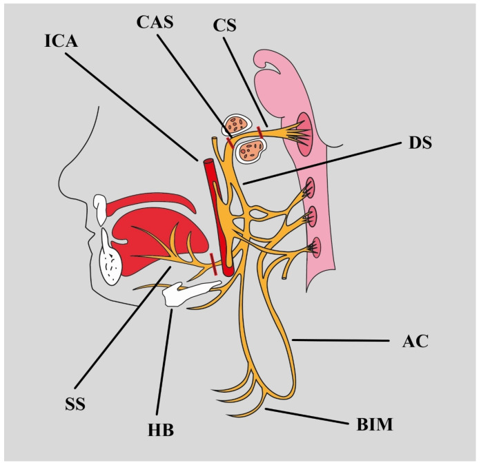
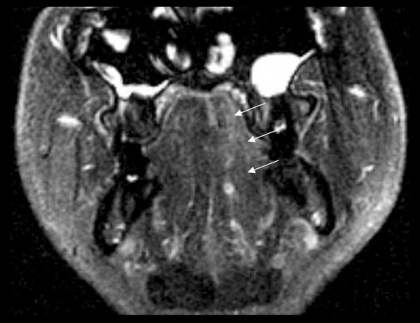
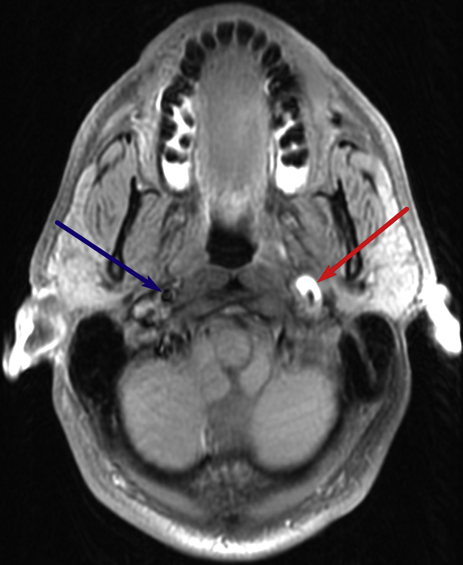
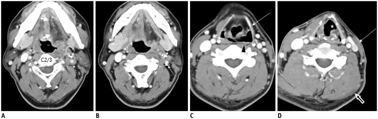

1765 — Bệnh thần kinh hạ thiệt XII sau xạ trị đầu cổ / Radiation-induced hypoglossal neuropathy (CN XII)
Tags: pattern:teo-co pattern:teo-luoi pattern:benh-than-kinh pattern:xo-hoa-sau-xa pattern:lech-luoi pattern:trong-truong-chieu vung:dau-co vung:nen-so vung:loi vung:co protocol:MRI protocol:lieu-OAR score:CTCAE incidentaloma:khong
Mức chắc chắn (certainty): tổng hợp y văn (literature synthesis) — 2 đoàn hệ xạ trị vòm họng (Chow 2019, 797 bệnh nhân; Luk 2013, 965 bệnh nhân), 1 nghiên cứu điện cơ ở bệnh nhân nuốt khó muộn (McMillan 2026, 13 ca), 1 ca nguyên văn có ảnh (Alqahtani 2016), 1 tổng quan giải phẫu–nguyên nhân (Węgiel 2024) và 1 bài hình ảnh thần kinh cổ (Lee 2017).
Nguồn có PMCID (tên tác giả đã đối chiếu):
- Alqahtani SA, Agha C, Rothstein T, Am J Case Rep 2016 — PMC4968431, CC BY-NC-ND 4.0.
- Węgiel A, Zielinska N, Głowacka M, Olewnik Ł, Biomedicines 2024 — PMC11048189, CC BY 4.0.
- Cruciata G, Parikh R, Pradhan M, Shah J, Greif E, Stein EG, Radiol Case Rep 2017 — PMC5417729, CC BY-NC-ND 4.0.
- Lee JH, Cheng KL, Choi YJ, Baek JH, Korean J Radiol 2017 — PMC5240499, CC BY-NC 3.0.
- McMillan H et al., Head Neck 2026 — PMC12621234, CC BY-NC-ND 4.0 (chỉ số liệu, không dùng ảnh).
Nguồn chỉ dùng số liệu (không PMC open access): Chow JCH et al., Radiother Oncol 2019 (PMID 31252300); Luk YS et al., Oral Oncol 2013 (PMID 22892236); Kong L et al., Int J Radiat Oncol Biol Phys 2011 (PMID 20605344); Shin HY et al., Clin Neurophysiol 2013 (PMID 23022037); Kato K et al., Magn Reson Med Sci 2002 (PMID 16082138).
Câu chốt: XII là dây sọ bị tổn thương thường gặp nhất sau xạ vòm họng — 30/36 ca (83%) liệt dây sọ do xạ trong đoàn hệ Luk 2013 là XII. Ba con số phải thuộc: (1) liệt XII sau IMRT triệt căn là 8,7% (69/797) với theo dõi trung vị 8,1 năm (Chow 2019) — không phải biến cố hiếm; (2) D1cc < 74 Gy EQD2 hạ nguy cơ từ 20,8% xuống 2,4% (AUC 0,826); (3) hình ảnh chốt không phải "khối" mà là teo mỡ nửa lưỡi: lưỡi lệch VỀ BÊN LIỆT khi thè ra, T1W sáng do mỡ thay sợi cơ, mất tín hiệu trên fat-sat. Nếu có khối hoặc dày/hủy ống hạ thiệt → đó không phải di chứng xạ, mà là tái phát/u lan theo dây.
1. Tổng quan bệnh học – cơ chế hình ảnh
1.1 XII đi qua đâu — giải phẫu quyết định cách đọc phim
- Nhân vận động nằm ở hành não, sát sàn não thất IV; sợi trục đi ra rãnh trước–bên hành não (giữa trám hành và tháp hành), rồi chạy trong bể não trước (đoạn bể não, cisternal segment).
- Ống hạ thiệt (hypoglossal canal) là một ống xương dài ~5 mm ở phần bên lỗ chẩm, không phải một lỗ tròn; trong ống, XII đi cùng nhánh màng não của động mạch đốt sống và đám rối tĩnh mạch. Đây là điểm hẹp giải phẫu: u nhỏ, di căn hay xơ hóa trong ống đều gây liệt mà không cần khối lớn.
- Ra khỏi ống, XII vào khoang cảnh sau (carotid space), chạy giữa động mạch cảnh trong (ICA) phía trước–trong và tĩnh mạch cảnh trong (IJV) phía sau–ngoài, rồi vòng ra trước trên sừng bé xương móng, chui giữa cơ móng–lưỡi và cơ hàm–móng vào sàn miệng.
- Chi phối: genioglossus (nhô lưỡi ra trước), hyoglossus (hạ và kéo lưỡi ra sau), styloglossus (kéo lưỡi lên–ra sau), các cơ lưỡi nội tại (thay đổi hình dạng lưỡi); nhánh C1 đi kèm XII chi phối geniohyoid và cơ giáp–móng.
- Hệ quả lâm sàng — quy tắc vàng: genioglossus bên liệt không đẩy được lưỡi sang bên đối diện, nên khi thè lưỡi, lưỡi lệch VỀ PHÍA TỔN THƯƠNG (bên liệt). Tổn thương bó vỏ–nhân (UMN) cho lệch về phía ĐỐI DIỆN. Đây là câu hỏi khám 30 giây phân biệt tổn thương dây XII với đột quỵ.

*Sơ đồ giải phẫu: XII từ đoạn bể não (CS) → đoạn trong ống hạ thiệt (CAS) → đoạn xuống (DS); các nhánh cùng quai cổ (AC) và nhánh cơ dưới móng (BIM). Nguồn: Węgiel A et al., Biomedicines 2024 (PMC11048189, Fig. 2), CC BY 4.0.*1.2 TẠI SAO xạ làm liệt XII — chuỗi mạch máu nhỏ → xơ → hủy myelin
- Tổn thương nguyên phát ở vi mạch nuôi dây. Xạ gây apoptosis tế bào nội mô, mất mao mạch quanh dây, thiếu oxy mô kéo dài; TGF-β tăng → nguyên bào sợi → myofibroblast → lắng đọng collagen I/III, ức chế MMP. Kết quả là bao xơ quanh dây và chèn ép trong ống hạ thiệt — nơi dây không có chỗ giãn.
- Trên sợi trục: phù myelin → hủy myelin từng đoạn → mất sợi trục → thoái hóa sợi trục. Sợi vận động có myelin dày bị ảnh hưởng sớm, nên biểu hiện là yếu–teo lưỡi chứ không phải đau (khác V3 — bài 1764).
- TẠI SAO tiềm tàng nhiều năm: dây là mô hậu phân bào, chuyển hóa chậm; tổn thương tích lũy qua nhiều năm mới mất bù. Trong đoàn hệ vòm họng, liệt dây sọ xuất hiện trung vị 7,6 năm sau xạ và nguy cơ tích lũy 44,5% ở 20 năm (Kong 2011); dây dưới (IX–XII) bị nhiều hơn dây trên (25,5% vs 13,9%).
- Vì sao "teo" chứ không "khối": mất thần kinh → mất tín hiệu dinh dưỡng cơ → phân hủy protein > tổng hợp → teo sợi cơ; tế bào vệ tinh không bù đủ → mỡ thay thế. Trên MRI, mỡ thay thế có T1W sáng, T2W sáng, mất tín hiệu khi fat-sat. Xạ không tạo khối tế bào — nếu có khối thì nguyên nhân là u, không phải xạ.
- Chuỗi thời gian mất thần kinh (Kato 2002, 6 ca, theo dõi 6–44 tháng): ≤ 3 tháng = cơ tăng T2W + ngấm thuốc, T1W chưa đổi, chưa teo; > 3 tháng = T1W và T2W đều sáng (mỡ), thể tích giảm, ngấm thuốc giảm. Vì vậy MRI ở tháng thứ 1–2 có thể bình thường; muốn thấy teo phải chụp lại sau 3–6 tháng.
1.3 Số liệu định lượng phải thuộc
| Đại lượng | Con số | Nguồn |
|---|---|---|
| Liệt XII sau IMRT triệt căn cho ung thư vòm họng | 8,7% (69/797), theo dõi trung vị 8,1 năm | Chow 2019, PMID 31252300 |
| Ngưỡng liều tốt nhất (ROC) | D1cc — AUC 0,826 ở 8 năm; D1cc 74 Gy EQD2 → nguy cơ 4,7% | Chow 2019 |
| D1cc dưới/trên ngưỡng | 2,4% vs 20,8% (p < 0,001) | Chow 2019 |
| Yếu tố nguy cơ độc lập | liều cao, đái tháo đường, T giai đoạn muộn, ống hạ thiệt bị xâm lấn trên hình ảnh | Chow 2019 |
| Liệt dây sọ do xạ (xạ 1998–2007) | 3,7% (36/965); theo dõi trung vị 8,9 năm; XII hay gặp nhất 30/36, trong đó 6 ca hai bên | Luk 2013, PMID 22892236 |
| Liệt dây sọ sau xạ vòm họng quy ước | 30,9% (98/317); tích lũy 10,4 / 22,4 / 35,5 / 44,5% ở 5 / 10 / 15 / 20 năm | Kong 2011, PMID 20605344 |
| Thần kinh XII dưới lâm sàng ở nuốt khó muộn | 13/13 (100%) có bằng chứng điện cơ, 31% không có dấu hiệu lâm sàng; trung vị 8,3 năm sau xạ | McMillan 2026, PMC12621234 |
| Tiềm tàng dây sọ dưới (điện cơ) | trung vị 61 tháng (20–118); myokymia 3/6, điện cơ bất thường 5/6 | Shin 2013, PMID 23022037 |
| Ca teo lưỡi một bên muộn nhất | Xạ 1980 → triệu chứng 2014 = ~34 năm | Alqahtani 2016, PMC4968431 |
- Đọc con số cho đúng: "8,7%" là 69 người bị liệt lưỡi vĩnh viễn trong một trung tâm lớn — không phải biến cố hiếm gặp; và 31% ca dưới lâm sàng nghĩa là khám lưỡi bình thường không loại trừ. Nhưng "44,5% ở 20 năm" thuộc xạ quy ước thập niên 1980–1990, không dùng để hù bệnh nhân IMRT hôm nay.
- Phản biện (cửa 3): ngưỡng 74 Gy EQD2 xuất phát từ 330 dây được vẽ lại hồi cứu trong một trung tâm, chưa xác nhận tiền cứu; đây là constraint đề xuất, không phải hằng số sinh học. Ngược lại, tỉ lệ 8,7% đủ lớn để biện minh cho việc vẽ XII là OAR bắt buộc trong kế hoạch IMRT vòm họng.
2. Mẫu hình + chẩn đoán phân biệt theo vị trí (gamut)
2.1 Mẫu hình lâm sàng
- Thể kinh điển: bệnh nhân đã xạ đầu cổ 5–30 năm, đến vì nói khó/nuốt khó tiến triển chậm, khám thấy nửa lưỡi teo, nhăn, lệch về bên liệt, có thể giật bó cơ (fasciculation); không đau, không khối, niêm mạc lưỡi bình thường.
- Thể dưới lâm sàng: không than phiền gì, teo lưỡi phát hiện tình cờ khi chụp MRI đầu–cổ vì lý do khác (McMillan 2026: 31%).
- Thể hai bên: lưỡi teo cả hai bên, khó nói/khó nuốt nặng, có thể phì đại mô mỡ lưỡi; gặp khi trường xạ phủ hai ống hạ thiệt hoặc khi có bệnh nơ-ron vận động.
- Thể kèm dây khác: XII + X (nuốt–nói), XII + IX–XI (hội chứng Collet–Sicard ở lỗ tĩnh mạch cảnh), XII + V (hội chứng Godtfredsen), XII + đau chẩm dữ dội (hội chứng lồi cầu chẩm) — các thể này gợi ý tổn thương thực thể, không phải di chứng xạ đơn thuần.
2.2 Gamut theo đoạn giải phẫu (dọc đường đi của XII)
| Đoạn | Bệnh cảnh gợi ý | Chẩn đoán phân biệt chính |
|---|---|---|
| Hành não (nhân XII) | Liệt lưỡi + dấu thân não khác, khởi phát cấp | Nhồi máu hành não (hội chứng Wallenberg), u hành não, mất myelin, bệnh nơ-ron vận động |
| Đoạn bể não | Liệt XII đơn độc tiến triển | U màng não, schwannoma XII, di căn màng não, xơ hóa sau xạ |
| Ống hạ thiệt | Liệt XII + đau chẩm, hoặc liệt đơn độc | Di căn xương nền sọ, u màng não/schwannoma trong ống, chordoma, viêm xương nền sọ, xâm lấn do u vòm họng |
| Khoang cảnh sau | Liệt XII + đau cổ/mặt, có thể kèm Horner | Bóc tách ICA, giả phình ICA, schwannoma dây XII, hạch cổ ác tính, u họng lan ra |
| Dưới hàm – sàn miệng | Liệt XII sau can thiệp/chấn thương | Phẫu thuật/ống thông, chấn thương, u tuyến dưới hàm, viêm mô tế bào |
2.3 Gamut theo hình thái trên MRI lưỡi
- Teo mỡ một bên, không khối, không phù → mất thần kinh (xạ, sau mổ, chấn thương, u đã điều trị).
- Teo + phù + ngấm thuốc ở giai đoạn sớm (< 3 tháng) → mất thần kinh cấp; dễ đọc nhầm là viêm cơ/u.
- Teo + khối trong lưỡi → u nguyên phát (SCC sàn miệng/lưỡi lan theo dây) hoặc di căn.
- Teo hai bên + giật bó cơ + không rối loạn cảm giác → bệnh nơ-ron vận động (ALS) hoặc Kennedy (SBMA) — không phải xạ.
3. Bảng so sánh phân biệt (ma trận đối chiếu)
| Thực thể (entity) | Hình ảnh điển hình (MRI/CT) | Chốt vào (rule-in) | Chốt loại (rule-out) | Gợi ý xác nhận |
|---|---|---|---|---|
| Bệnh thần kinh XII sau xạ | Teo mỡ nửa lưỡi (T1W sáng, mất tín hiệu fat-sat), không khối, không phù; ống hạ thiệt nguyên vẹn; XII có thể ngấm thuốc nhẹ | Tiền sử xạ đúng vùng + tiềm tàng ≥ 1–2 năm + teo mỡ đúng phân bố XII + không khối + ổn định 3–6 tháng + D1cc gần/vượt 74 Gy EQD2 | Có khối, dày/xói ống hạ thiệt, hạn chế khuếch tán, hoặc tiến triển nhanh → không phải xạ | Đối chiếu bản đồ liều (XII D1cc); MRI lặp 3–6 tháng; EMG genioglossus |
| Tái phát / u lan theo dây (PNS) | Dày dây không đều, ngấm thuốc mạnh, mất mỡ quanh dây trong ống, giãn/hủy ống hạ thiệt; ổ u nguyên phát (vòm họng, họng, tuyến mang tai) | Khối/ dày dây liên tục từ ổ u tới ống, xói xương, ADC thấp, FDG dương, tiến triển | Dây mảnh, ống nguyên vẹn, không khối, ổn định nhiều tháng → nghiêng xạ | MRI 3T T1FS+Gd đa bình diện + DWI; PET/CT; sinh thiết ổ u, không sinh thiết dây mù |
| U trong ống hạ thiệt (meningioma/schwannoma) | Khối bờ rõ, giãn ống, schwannoma T2 sáng + ngấm mạnh, meningioma T2 trung tính + đuôi màng cứng, có thể vôi hóa | Khối đặc + giãn ống + hiệu ứng khối | Không khối, ống bình thường, chỉ teo lưỡi → không phải u | MRI + CT xương nền sọ 0,5–1 mm; theo dõi hoặc mổ theo triệu chứng |
| Bóc tách ICA | Huyết khối trong thành: T1FS dải sáng hình liềm trong ICA; hẹp "đuôi chuột" trên MRA/CTA; có thể giả phình | Đau cổ/mặt một bên + Horner + liệt XII, dải sáng T1FS trong thành mạch, hẹp dài | Mạch máu bình thường, không dải sáng → loại | CTA/MRA cổ; MRI T1FS lát mỏng; kháng đông theo phác đồ |
| Di căn xương nền sọ / lồi cầu chẩm | Tiêu xương lồi cầu/ống hạ thiệt, khối mô mềm, ngấm thuốc, có thể phá vỏ xương | Đau chẩm dữ dội + liệt XII, tiêu xương trên CT, bệnh ung thư đã biết | Xương nguyên vẹn, không khối, đau nhẹ → ít nghĩ | CT xương 0,5–1 mm + MRI; PET/CT; sinh thiết nếu cần |
| Bệnh nơ-ron vận động (ALS/Kennedy) | Teo lưỡi hai bên, giật bó cơ, không khối, không ngấm, XII bình thường; teo cơ chi kèm theo | Teo + giật bó cơ lan rộng, không rối loạn cảm giác, điện cơ có thoái hóa sợi trục nhiều vùng | Teo một bên đơn độc, có tiền sử xạ đúng vùng → không phải ALS | EMG/điện cơ toàn thân; khám thần kinh; theo dõi tiến triển |
| Hội chứng Tapia (X + XII) | Teo nửa lưỡi + liệt dây thanh cùng bên, thường sau đặt nội khí quản/mặt nạ, không khối | Liệt lưỡi + liệt thanh quản cùng bên sau can thiệp đường thở | Chỉ XII đơn độc, có khối/u → không phải Tapia | Nội soi thanh quản; MRI cổ; theo dõi hồi phục |
| Chấn thương / sau mổ cổ | Dị vật kim loại, máu tụ, đứt dây, thay đổi giải phẫu sau mổ | Tiền sử chấn thương/mổ đúng vị trí, tổn thương thấy được trên CT/MRI | Tiền sử xa, không tổn thương cấu trúc → không phải chấn thương | CT cổ có cản quang; MRI; khám thần kinh trước–sau mổ |

Coronal T2W: dải mỡ bất đối xứng và teo mỡ nửa lưỡi trái (mũi tên) sau xạ vùng đầu–cổ — hình thái chốt của mất thần kinh XII mạn. Không có khối, không phù. Nguồn: Alqahtani SA et al., Am J Case Rep 2016 (PMC4968431, Fig. 2), CC BY-NC-ND 4.0.3.1 Ba câu hỏi trên MRI quyết định chẩn đoán
- Có khối hoặc dày dây bất thường không? Xạ cho dây mảnh/ngấm nhẹ, không khối; tái phát/PNS cho dày không đều, ngấm mạnh, liên tục từ ổ u.
- Ống hạ thiệt có bị xói/giãn không? Giãn ống = schwannoma/u trong ống; xói ống = di căn/u lan; xạ không làm giãn ống.
- Lưỡi có teo mỡ đúng phân bố không? Teo một bên + không khối + ổn định củng cố nguyên nhân thần kinh; teo hai bên + giật bó cơ đòi hỏi loại ALS.
3.2 "Teo lưỡi" không đồng nghĩa "di chứng xạ"
- Teo lưỡi là dấu hiệu mất thần kinh, không phải chẩn đoán nguyên nhân. Xạ, u, chấn thương, sau mổ, ALS đều cho cùng hình thái mỡ thay thế.
- Nguyên nhân nằm ở dây và ống hạ thiệt, không nằm ở lưỡi. Vì vậy mọi ca teo lưỡi mới phải đọc toàn bộ đường XII từ hành não đến sàn miệng, không dừng ở ảnh lưỡi.
- Ngấm thuốc dây sau xạ có thể tồn tại nhiều tháng–nhiều năm do viêm/xơ; đây là dấu tổn thương, không phải dấu u (Mousavi 2017, dẫn qua bài 1764).
4. Protocol chụp/đánh giá + ngưỡng liều
4.1 MRI nền sọ – ống hạ thiệt – lưỡi (bắt buộc khi có triệu chứng mới)
- Máy 3T (1,5T được, kém chi tiết dây), cuộn đầu–cổ; lát ≤ 1 mm cho chuỗi 3D.
- Chuỗi bắt buộc:
- Axial T2W và axial T1W không fat-sat (mỡ quanh dây, teo mỡ lưỡi).
- Axial + coronal T1W fat-sat sau tiêm (dây XII, ống hạ thiệt, khoang cảnh).
- DWI b ≥ 800 s/mm² + ADC (ổ nghi u/tái phát).
- 3D CISS/FIESTA đoạn bể não (dây mảnh, so sánh hai bên).
- Coronal T2W/STIR qua sàn miệng–lưỡi: đây là chuỗi bắt buộc để thấy teo mỡ, dễ bị bỏ nếu chỉ chụp axial.
- Tái tạo coronal/sagittal dọc XII từ chuỗi 3D T1 sau tiêm: hành não → bể não → ống → khoang cảnh.
- Phạm vi: từ hành não đến xương móng/sàn miệng, hai bên để so sánh; luôn chụp cả ổ u nguyên phát (vòm họng, họng, tuyến mang tai) vì PNS có thể "nhảy" đoạn.
- Đối chiếu bản đồ liều: chồng MRI lên CT xạ trị để xem XII và ống hạ thiệt có nằm trong vùng liều cao không.
4.2 CT và PET/CT
- CT xương nền sọ 0,5–1 mm: đánh giá xói/giãn ống hạ thiệt, vôi hóa, di căn xương. CT không đánh giá dây mềm.
- FDG-PET/CT: hữu ích khi MRI không kết luận hoặc có ổ nghi tái phát; dương giả sau xạ/viêm, âm giả với u nhỏ. Không dùng PET đơn thuần để chẩn đoán bệnh thần kinh.
4.3 Ngưỡng liều tham chiếu
| Cấu trúc | Ngưỡng / mô hình | Ý nghĩa thực hành | Nguồn |
|---|---|---|---|
| XII (IMRT vòm họng) | D1cc < 74 Gy EQD2 → liệt 2,4% vs 20,8%; tại 74 Gy nguy cơ 4,7%; AUC 0,826 | Constraint chính khi vẽ XII; ưu tiên giảm liều điểm nóng 1 cc hơn là Dmax | Chow 2019 |
| Dây sọ dưới nói chung | Nguy cơ tích lũy 44,5% ở 20 năm (xạ quy ước) | Giải thích cho bệnh nhân sống lâu; theo dõi ≥ 10 năm | Kong 2011 |
| XII dưới lâm sàng | 100% ca nuốt khó muộn có bằng chứng điện cơ, 31% không triệu chứng | Khám lưỡi và đánh giá nuốt, đừng chờ bệnh nhân than | McMillan 2026 |
4.4 Khi nào chụp lại — sơ đồ quyết định
flowchart TD
A[Bệnh nhân đã xạ đầu cổ, teo lưỡi hoặc nói/nuốt khó mới] --> B[MRI nền sọ + ống hạ thiệt + coronal lưỡi: T1, T2, T1FS+Gd, DWI, 3D CISS]
B --> C{Có khối, dày dây khu trú, xói/giãn ống hạ thiệt, hạn chế khuếch tán?}
C -->|Có| D[Nghĩ tái phát/u lan theo dây: PET-CT, sinh thiết đúng ổ u, hội chẩn]
C -->|Không| E{Teo mỡ nửa lưỡi + không khối + ổn định + D1cc gần 74 Gy?}
E -->|Có| F[Bệnh thần kinh XII sau xạ: đánh giá nuốt, phục hồi chức năng, MRI lặp 3-6 tháng]
E -->|Không| G[Chẩn đoán khác: ALS, Tapia, bóc tách ICA, sau mổ, chấn thương]
F --> H{Tiến triển nhanh hoặc xuất hiện khối mới?}
H -->|Có| D
H -->|Không| I[Theo dõi 6-12 tháng, khám lưỡi + nuốt mỗi lần]
4.5 Phân độ và theo dõi
- Chưa có thang riêng cho XII. Dùng CTCAE cho triệu chứng (nói khó, nuốt khó) và mô tả giai đoạn thực hành: 0 = không triệu chứng, không teo; 1 = teo đơn thuần/không triệu chứng (kể cả chỉ thấy trên MRI); 2 = nói khó rõ, ăn được thức ăn đặc; 3 = nuốt khó cần thức ăn xay hoặc sặc; 4 = không nuốt được, cần ống nuôi. Ghi giai đoạn cùng D1cc để so sánh giữa các lần.
- Theo dõi: khám lưỡi (thè lưỡi, đẩy má, liếm môi), đánh giá nuốt (FEES/VFSS) mỗi 6–12 tháng ở người sống lâu sau xạ vòm họng; MRI lặp 3–6 tháng nếu chưa kết luận, sau đó 12 tháng nếu ổn định.
- Phục hồi chức năng: bài tập lưỡi–nuốt, tư thế nuốt, làm đặc dịch; không có thuốc phục hồi dây; tránh can thiệp phá hủy.
5. Biến thể bình thường và cạm bẫy
- Bất đối xứng mỡ lưỡi do tuổi/mất răng/nhai một bên: người già có thể có dải mỡ bất đối xứng nhẹ mà không bệnh thần kinh; đối chiếu hình dạng lưỡi, thể tích, tín hiệu dây trước khi kết luận.
- Fat-sat "xóa" teo mỡ: trên T1FS, mỡ thay thế mất tín hiệu → lưỡi trông "bình thường". Luôn đọc T1W không fat-sat.
- Lệch lưỡi do nguyên nhân cơ học: thiếu răng, loét miệng, đau khớp thái dương hàm làm bệnh nhân đẩy lưỡi lệch; kiểm tra teo và giật bó cơ, không chỉ nhìn hướng lệch.
- Nhầm hướng lệch: XII lệch về bên liệt; UMN lệch về bên đối diện. Ghi sai hướng là ghi sai định khu.
- Hiệu ứng thể tích ống hạ thiệt: lát cắt dày làm dây "dày" giả; dùng lát ≤ 1 mm, tái tạo vuông góc với ống.
- Artifact kim loại răng/hàm: gây tối tín hiệu quanh sàn miệng; dùng SEMAC/MAVRIC hoặc CT khi cần.
- "Satisfaction of search": thấy teo lưỡi rồi dừng, bỏ sót u vòm họng tái phát hoặc hạch cổ; luôn đọc lại ổ u và chuỗi hạch.
- Gọi mọi teo lưỡi hai bên là "xạ hai bên": nếu không khớp trường chiếu, nghĩ ALS/Kennedy và khám chi, gõ phản xạ, tìm giật bó cơ lan rộng.
- Chọc/sinh thiết dây trong mô xạ: ít giá trị, nguy cơ làm nặng tổn thương; chỉ sinh thiết ổ u nếu có.
6. Tự lượng giá — Blind Quiz
Ca 1 — Nam 51 tuổi, nói khó và khó cử động lưỡi tăng dần vài tuần; tiền sử sarcoma hoạt mạc cánh tay trái được xạ trị diện rộng năm 1980, sẹo xơ lan từ tay lên cổ.
- Gợi ý lâm sàng: không đau, không sốt, không khối cổ; khám thấy teo nửa lưỡi trái, lưỡi lệch trái khi thè.
- Câu hỏi: Dấu hiệu chính trên ảnh? Ba chẩn đoán phân biệt? Vì sao không sinh thiết lưỡi?
Bấm để hiện đáp án (findings + chẩn đoán)
- Findings: teo mỡ và dải mỡ bất đối xứng nửa lưỡi trái (mũi tên), không khối, không phù, không ngấm thuốc bất thường; ống hạ thiệt nguyên vẹn.
- Chẩn đoán: bệnh thần kinh XII sau xạ (muộn ~34 năm sau xạ) — nguyên nhân do xơ hóa/thiếu máu dây trong ống hạ thiệt.
- Phân biệt: tái phát/u lan theo dây (loại vì không khối/không dày dây), u ống hạ thiệt (loại vì không giãn ống), ALS (loại vì một bên, không giật bó cơ lan rộng, không teo chi).
- Vì sao không sinh thiết: không có khối; sinh thiết dây trong mô xạ không đổi điều trị, có nguy cơ làm nặng thêm. Theo dõi MRI 3–6 tháng rồi 12 tháng.
- Nguồn ảnh: Alqahtani SA et al., Am J Case Rep 2016 (PMC4968431, Fig. 2), CC BY-NC-ND 4.0.
Ca 2 — Bệnh nhân bóc tách động mạch cảnh trong: đau cổ–mặt một bên, sụp mi nhẹ (Horner), lưỡi lệch cùng bên; không tiền sử xạ.

- Gợi ý: đau sau gáy/cổ, có thể sau chấn thương nhẹ hoặc cử động cổ mạnh; mạch cảnh không đập bất thường.
- Câu hỏi: Dấu hiệu chốt? Vì sao liệt XII trong bệnh cảnh này? Bước tiếp theo?
Bấm để hiện đáp án (findings + chẩn đoán)
- Findings: dải sáng hình liềm trong thành ICA trái trên T1FS (mũi tên đỏ) = máu trong thành (methemoglobin); kèm giả phình và hẹp lòng mạch; không khối quanh dây XII.
- Chẩn đoán: bóc tách động mạch cảnh trong gây liệt XII cùng bên do dây chạy sát thành mạch trong khoang cảnh sau; kèm Horner (sụp mi) là bộ ba kinh điển.
- Phân biệt: đau dây V, viêm mô tế bào cổ, sau xạ (không tiền sử), u khoang cảnh (không khối).
- Bước tiếp theo: CTA/MRA cổ xác nhận; kháng đông/kháng kết tập theo phác đồ ≥ 3 tháng; theo dõi 7 ngày, 3 tháng; tầm soát bệnh mô liên kết.
- Vì sao quan trọng: bỏ sót bóc tách = nguy cơ đột quỵ; đây là nguyên nhân cấp cứu của liệt XII, không phải di chứng xạ.
- Nguồn ảnh: Cruciata G et al., Radiol Case Rep 2017 (PMC5417729, Fig. 1), CC BY-NC-ND 4.0.
Ca 3 — Nam 47 tuổi, sau vụ nổ, liệt nhiều dây sọ cùng bên, trong đó có lưỡi lệch và teo; CT cổ có nhiều mảnh kim loại nhỏ quanh mạch cảnh trái.

- Gợi ý: chấn thương xuyên/đụng dập vùng cổ bên; liệt XII + X + XI cùng bên.
- Câu hỏi: Tại sao liệt nhiều dây? Cần loại gì trước khi gọi là "tổn thương dây đơn thuần"?
Bấm để hiện đáp án (findings + chẩn đoán)
- Findings: nhiều mảnh kim loại nhỏ (mũi tên) và máu tụ quanh ICA trái; thay đổi thanh quản/đường thở; không thấy khối u.
- Chẩn đoán: liệt nhiều dây sọ sau chấn thương (tổn thương IX–XII trong khoang cảnh/lỗ tĩnh mạch cảnh) — hình thái Collet–Sicard do chấn thương.
- Vì sao nhiều dây: các dây IX, X, XI, XII cùng đi qua khoảng hẹp giữa lỗ tĩnh mạch cảnh và ống hạ thiệt; một mảnh kim loại/máu tụ đủ chạm nhiều dây.
- Cần loại trước: tổn thương mạch máu (bóc tách/giả phình) bằng CTA, và dị vật còn lại; sau đó đánh giá nuốt–nói và phục hồi chức năng.
- Lưu ý nguồn ảnh: ảnh minh họa hình thái chấn thương cổ do dị vật, không phải ca bệnh nhân trong câu chuyện.
- Nguồn ảnh: Lee JH et al., Korean J Radiol 2017 (PMC5240499, Fig. 20), CC BY-NC 3.0.
Bài liên quan chéo
- 700 – Tổng quan Đầu Cổ
- 1764 – Bệnh thần kinh sinh ba V3 sau xạ trị đầu cổ (cùng nguyên lý "xơ hóa dây trong ống", khác dây)
- 1763 – Xơ hóa mô mềm cổ sau xạ (nền xơ của cùng trường xạ)
- 1684 – Nuốt khó sau xạ trị đầu cổ (đánh giá nuốt, FEES/VFSS)
- 1761 – Trismus sau xạ trị đầu cổ
- 247 – Bóc tách động mạch cổ/đốt sống
- 750 – Bản đồ hạch cổ & NI-RADS
Ảnh
1765_doan-than-kinh-XII_Anatomy_PMC11048189.jpg— sơ đồ ba đoạn XII (CS/CAS/DS) và các nhánh (Węgiel A et al., Biomedicines 2024, PMC11048189, Fig. 2, CC BY 4.0).1765_teo-luoi_MRI_PMC4968431.jpg— coronal T2W: teo mỡ và dải mỡ bất đối xứng nửa lưỡi trái (Alqahtani SA et al., Am J Case Rep 2016, PMC4968431, Fig. 2, CC BY-NC-ND 4.0, nguyên bản không crop).1765_boc-tach-ICA_MRI_PMC5417729.jpg— axial T1FS: dải sáng hình liêm trong thành ICA trái, giả phình (Cruciata G et al., Radiol Case Rep 2017, PMC5417729, Fig. 1, CC BY-NC-ND 4.0, nguyên bản không crop).1765_chan-thuong-co_CT_PMC5240499.jpg— CT cổ: dị vật kim loại và máu tụ quanh ICA trái sau chấn thương (Lee JH et al., Korean J Radiol 2017, PMC5240499, Fig. 20, CC BY-NC 3.0).
Không dùng để chẩn đoán độc lập khi chưa có người hướng dẫn.